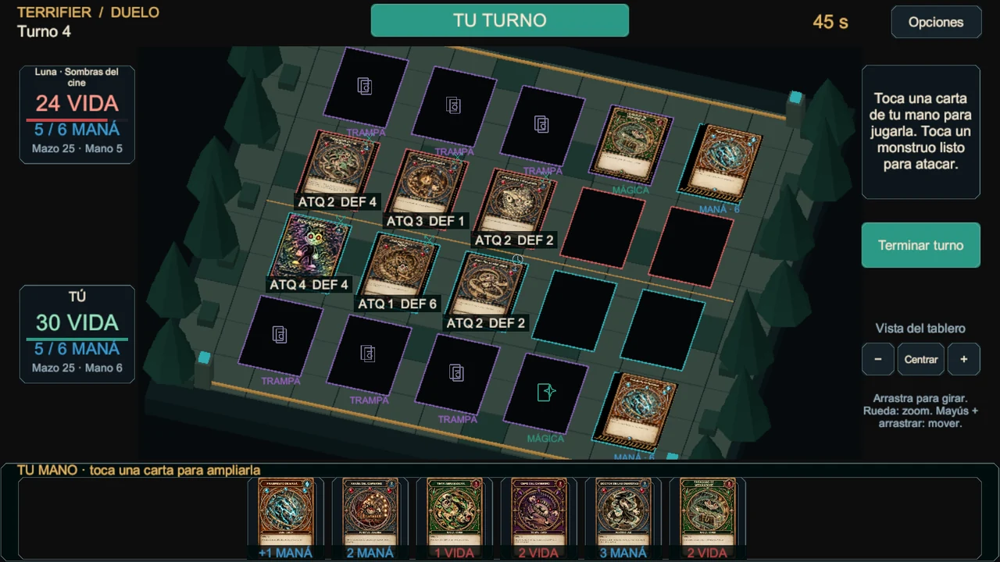

Un álbum de 266 diseños
Cada sobre trae seis cartas. Descubre Primera Edición, Bosque y Puerto y busca sus versiones foil, full art y limitadas.
Simulador de tienda de cartas
Atiende a tus clientes, abre sobres de criaturas de terror y reta a tus amigos con el mazo que has construido.
Gratis · Multijugador online · PC y Android
Fija el precio, escanea los artículos y cobra a tus clientes.

Invoca monstruos, prepara trampas y reserva maná para tu siguiente jugada.
Duelo de prueba en el motor del juego.Cada sobre trae seis cartas. Descubre Primera Edición, Bosque y Puerto y busca sus versiones foil, full art y limitadas.

Visita la tienda de un amigo, compara ofertas y cambia cartas y monedas. También puedes pujar en el mercado de jugadores.
Abre la ficha oficial en Google Play, instala el juego e inicia sesión para entrar en tu tienda.
Google PlayWindows y Android comparten servidor. Añade a tus amigos desde Comunidad para visitar sus tiendas e intercambiar cartas.
Necesitas conexión a Internet. Tu tienda y tu colección se guardan en el servidor.